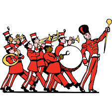
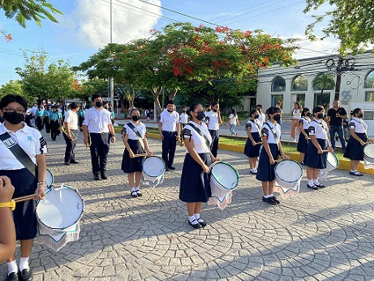

Banda de guerra
El programa de bandas de guerra pretende reafirmar los valores cívicos y
de identidad en niños y jóvenes de nivel básico así como de estimular sus
capacidades físicas coordinativas de orientación, ritmo y adaptación a su medio
social, así reafirmando valores, actitudes y habilidades pero sobre todo que
fortalezca su identidad nacional y de permanencia a partir de actividades cívicas
derivadas de la constitución de bandas de guerra, mismas que están
íntimamente relacionadas con las materias de ética, historia de México y
relaciones humanas.
Horarios:
Turno vespertino
| Horarios |
Sábado |
| 7:00-8:00 |
|
1ro vespertino |
| 8:00-9:00 |
1ro vespertino |
| 9:00-10:00 |
3ro y 5to vespertino |
Turno matutino
| Horarios |
Lunes |
SÁBADO |
| 14:00-15:00 |
5to matutino |
SELECTIVO |
| 15:00-16:00 |
3ro matutino |
|
| 16:00-17:00 |
3ro matutino |
|
